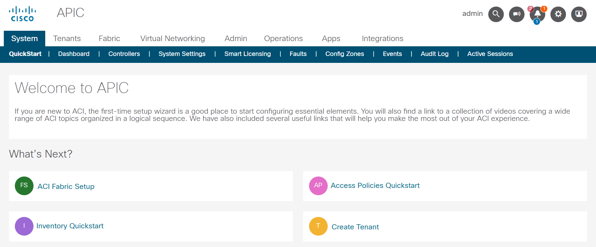
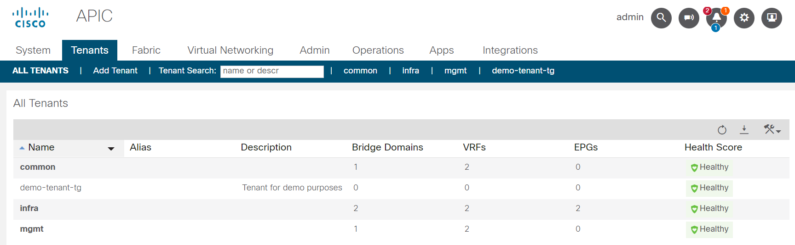
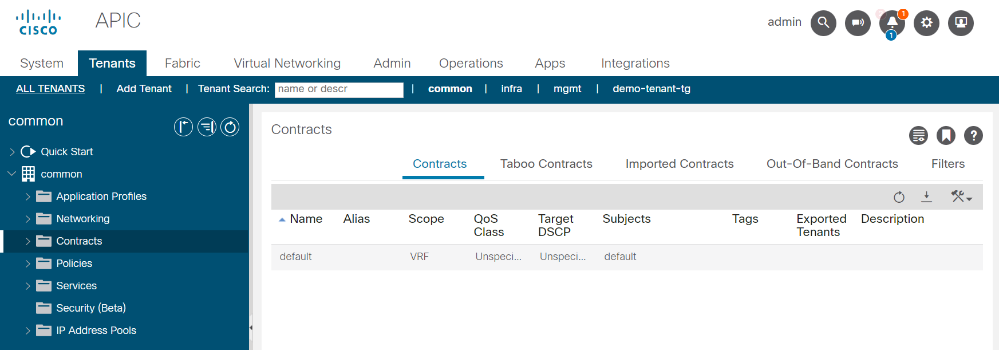

Project - Network automation
Although the (historical) focus of Ansible was Linux automation, it is very strong with automating network as well.
Ansible collections support a wide range of vendors, device types, and actions, so you can manage your entire network with a single automation tool. With Ansible, you can:
- Automate repetitive tasks to speed routine network changes and free up your time for more strategic work
- Leverage the same simple, powerful, and agentless automation tool for network tasks that operations and development use
- Separate the data model (in a playbook or role) from the execution layer (via Ansible modules) to manage heterogeneous network devices
- Benefit from community and vendor-generated sample playbooks and roles to help accelerate network automation projects
- Communicate securely with network hardware over SSH or HTTPS
Objective
Get to know network automation with Ansible.
Network automation uses the basic Ansible concepts, but there are some differences in how the network modules work.
Unlike most Ansible modules, network modules do not run on the managed nodes. From a user’s point of view, network modules work like any other modules. They work with ad hoc commands, playbooks, and roles. Behind the scenes, however, network modules use a different methodology than the other (Linux/Unix and Windows) modules use. Ansible is written and executed in Python. Because the majority of network devices can not run Python, the Ansible network modules are executed on the Ansible control node.
Guide
You will execute some automation tasks against Cisco ACI. The Cisco Application Centric Infrastructure (ACI) allows application requirements to define the network. This architecture simplifies, optimizes, and accelerates the entire application deployment life cycle.
The Application Policy Infrastructure Controller (APIC) manages the scalable ACI multi-tenant fabric. The APIC provides a unified point of automation and management, policy programming, application deployment, and health monitoring for the fabric. The APIC, which is implemented as a replicated synchronized clustered controller, optimizes performance, supports any application anywhere, and provides unified operation of the physical and virtual infrastructure.
The APIC enables network administrators to easily define the optimal network for applications. Data center operators can clearly see how applications consume network resources, easily isolate and troubleshoot application and infrastructure problems, and monitor and profile resource usage patterns.
The Cisco Application Policy Infrastructure Controller (APIC) API enables applications to directly connect with a secure, shared, high-performance resource pool that includes network, compute, and storage capabilities.
Step 1 - Prepare project
Create a new project folder in your home directory:
We will be using a Cisco ACI Sandbox available online.

Open a new browser tab and go to https://sandboxapicdc.cisco.com/#
Tip
The credentials for accessing the Cisco Sandbox are shown below, you can copy the content by using the symbol on the right of the code block.
Username:
Password:
Step 2 - Inventory and playbook
Within your newly created project folder, create an inventory file and a playbook file.
The goal is to create a new tenant within the APIC controller with Ansible. The tenant should have a recognizable name e.g. demo-tenant-<initials>.

Automating the ACI with Ansible requires additional modules, these are not included in the ansible-core binary and need to be installed with Ansible Galaxy. Use the ansible-galaxy cli-utility and install the cisco.aci collection.
If you use the Ansible navigator (which utilizes an execution environment), the collection is available. The method for playbook execution is up to you, why not try it with both ways?!
Tip
You have to instruct Ansible to communicate with the APIC API, per default Ansible would try to communicate via SSH. This will not work.
Use the same credentials for API communication as for the login to the APIC UI.
The API endpoint (host) for the ACI modules can use the URL of the sandbox, you won't need the prefix https://. An overview of all available ACI modules can be found in the Ansible documentation. The documentation also provides an extensive Guide for ACI automation.
Achieve the following tasks:
- Inventory and playbook created
- Use variables where possible (useful)
- Tenant created in ACI controller via Ansible
You may encounter the following error messages:
Failure
Expect an error message complaining about certification verification:
If you see an error message like above, you can disable certificate validation for your task:
For a production environment this is obviously not recommended!
Failure
If you see one of the following error messages, ensure that the Sandbox is available:
Connection failed for https://sandboxapicdc.cisco.com/api/aaaLogin.json. Connection failure: The read operation timed out
Authentication failed: -1 Unable to parse output as JSON, see 'raw' output. Expecting value: line 1 column 1 (char 0)", "raw": "<html>\r\n<head><title>502 Bad Gateway</title></head>\r\n<body bgcolor=\"white\">\r\n<center><h1>502 Bad Gateway</h1></center>\r\n<hr><center>nginx/1.13.12</center>\r\n</body>\r\n</html>\r\n
In case of an unavailable APIC sandbox, re-run your playbook when it comes back online.
Step 3 - Roles and encryption
Now that you can execute automated tasks against the ACI, let's re-format the project and use some Ansible best-practices.
All Ansible projects should use the role structure, if your project does not already uses it, now is the time to rearrange your content. Create a roles folder and an appropriately named sub-folder for the tenant creation with all ncessary folder and files.
Your tasks using the Ansible ACI module(s) require username and password, at least the password should be encrypted. Ansible Vault encrypts variables and files so you can protect sensitive content rather than leaving it visible as plaintext in playbooks or roles, take a look at the Ansible Vault documentation for further informations. Encrypt the APIC credentials and re-run your playbook.
Tip
Remember the necessary additional cli paramater when executing a playbook which references encrypted content.
Achieve the following tasks:
- Project uses Ansible role structure
- APIC credentials are vault-encrypted
- Playbook is still runable
Step 4 - Use filters to manipulate data
Filters let you transform JSON data into YAML data, split a URL to extract the hostname, get the SHA1 hash of a string, add or multiply integers, and much more. You can use the Ansible-specific filters documented here to manipulate your data, or use any of the standard filters shipped with Jinja2.
Create a new role which utilizes an Ansible ACI module that can manage contract resources (vz:BrCP). Get all contracts of the common tenant and output a list with only the contract names.

The common tenant has at least one contract (default).
Dealing with network devices often means dealing with large JSON objects and you have to filter the output to your needs. Browse the Ansible filter documentation for a suitable filter.
The Ansible module you will be using returns a JSON output like the following:
{
"changed": false,
"current": [
{
"fvTenant": {
"attributes": {
"annotation": "",
"childAction": "",
"descr": "",
"dn": "uni/tn-common",
"extMngdBy": "",
"lcOwn": "local",
"modTs": "2022-04-16T13:54:30.664+00:00",
"monPolDn": "uni/tn-common/monepg-default",
"name": "common",
"nameAlias": "",
"ownerKey": "",
"ownerTag": "",
"status": "",
"uid": "0",
"userdom": "all"
},
"children": [
{
"vzBrCP": {
"attributes": {
"accessPrivilege": "USER",
"annotation": "",
"childAction": "",
"configIssues": "",
"descr": "",
"extMngdBy": "",
"intent": "install",
"lcOwn": "local",
"modTs": "2022-04-16T13:54:30.664+00:00",
"monPolDn": "uni/tn-common/monepg-default",
"name": "default",
"nameAlias": "",
"ownerKey": "",
"ownerTag": "",
"prio": "unspecified",
"reevaluateAll": "no",
"rn": "brc-default",
"scope": "context",
"status": "",
"targetDscp": "unspecified",
"uid": "0",
"userdom": "all"
},
"children": [
{
"vzSubj": {
"attributes": {
"accessPrivilege": "USER",
"annotation": "",
"childAction": "",
"configIssues": "",
"consMatchT": "AtleastOne",
"descr": "",
"extMngdBy": "",
"lcOwn": "local",
"modTs": "2022-04-16T13:54:30.664+00:00",
"monPolDn": "uni/tn-common/monepg-default",
"name": "default",
"nameAlias": "",
"prio": "unspecified",
"provMatchT": "AtleastOne",
"revFltPorts": "yes",
"rn": "subj-default",
"status": "",
"targetDscp": "unspecified",
"uid": "0",
"userdom": "all"
},
"children": [
{
"vzRsSubjFiltAtt": {
"attributes": {
"accessPrivilege": "USER",
"action": "permit",
"annotation": "",
"childAction": "",
"directives": "",
"extMngdBy": "",
"forceResolve": "yes",
"lcOwn": "local",
"modTs": "2022-04-16T13:54:30.664+00:00",
"monPolDn": "uni/tn-common/monepg-default",
"priorityOverride": "default",
"rType": "mo",
"rn": "rssubjFiltAtt-default",
"state": "formed",
"stateQual": "none",
"status": "",
"tCl": "vzFilter",
"tContextDn": "",
"tDn": "uni/tn-common/flt-default",
"tRn": "flt-default",
"tType": "name",
"tnVzFilterName": "default",
"uid": "0",
"userdom": "all"
}
}
}
]
}
}
]
}
}
]
}
}
],
"failed": false
}
}
The highlighted lines show the list of contracts and the name of the contract-element. You need to traverse the JSON object until you reach the key you want to get. In JSON, list-objects are encapsulated with square brackets (start with [ and end with ]), dictionary objects with curly brackets (start with { and end with }).
Oberserving the above outout, you can see that multiple list objects are within the complete JSON object. The value of the key current is a list, every list item of this key is a tenant (with multiple key-value pairs which can also be dictionaries or lists).
If you filter for a single tenant (by provding the tenant name) when using the module, the list current only has one element. Lists (in Python, which Ansible is based on) start at element 0, the second list element is 1 and so on.
The resulting output in your playbook-run should look something like this (considering that the common tenant only has one contract):
TASK [aci-contract : Output list of contract names of Tenant 'common'] ********
ok: [demo-aci-host] => {
"msg": [
"default"
]
}
Tip
There are multiple ways to achieve the desired solution, try around!
Achieve the following tasks:
- New role for contract handling created
- Playbook runs both roles
- Playbook outputs list of all contracts for common tenant
If you struggle to find a solution, here are some hints. (Try without them first!)
The following tipps may help you to develop a solution:
* Use the `cisco.aci.aci_contract` module.
* Use `state: query` for listing all contract objects.
* Store the module output in a variable (register).
* Use the `json_query` filter. The filter is part of the `community.general` collection.
* Traversing the JSON object can be achieved by `current[0].fvTenant.children...`
* Output to stdout can be achieved the debug module.